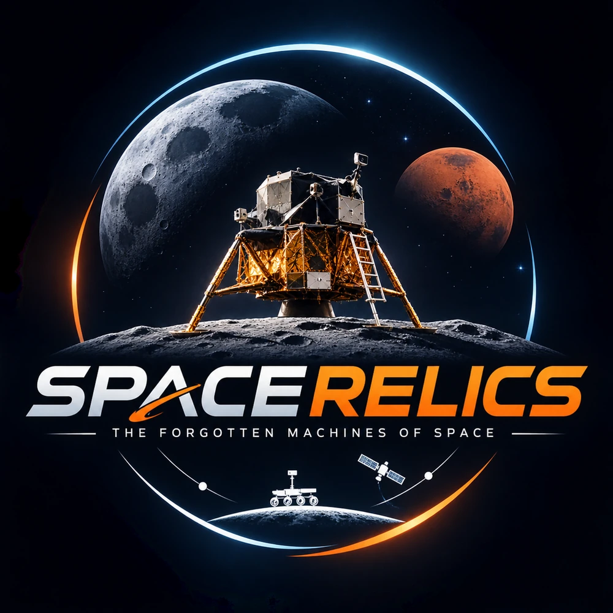
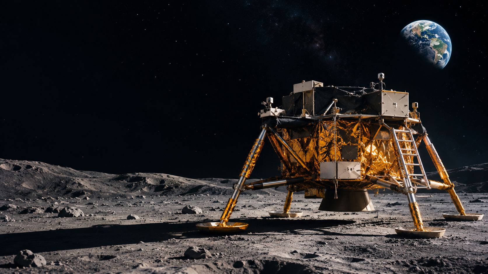

Descent engines
Rocket engines produce thrust by expelling high-speed exhaust. A throttleable engine helps a lander manage its speed and trajectory during powered descent.

SPACERELICS THE FORGOTTEN MACHINES OF SPACEEvery mission leaves a mark. Explore the machines, instruments and spacecraft that helped humanity reach other worlds — and discover the stories they still have to tell.

ARTISTIC VISUALIZATION · NOT A NASA ARCHIVAL PHOTO0° 41′ NNot everything that goes to space comes home.
Some machines become part of the worlds they helped us discover.
Travel from the lunar surface to the red planet and beyond. Select a destination to uncover the hardware, history and science left in its wake.
The lower half of Apollo 11's Lunar Module brought two astronauts safely to the Moon. When they departed, this machine remained — a permanent witness to a historic landing.
“The astronauts returned home. The machine that brought them there remained.”
*Rounded reference coordinates. Consult NASA/LROC records for the exact reference location.
Browse historic hardware by destination, mission or status. Inactive, retired, still operating and left at a destination are not interchangeable descriptions.
A learning-first planetary map. Select a world and a mission marker to open its story. Marker positions are schematic, not a navigation product.
Select a marker to discover the mission.
Follow milestones that shaped human and robotic exploration. Select an event to read why it mattered.
Space hardware is engineering made visible. Explore the principles behind systems that landed, moved, measured and communicated across worlds.
Rocket engines produce thrust by expelling high-speed exhaust. A throttleable engine helps a lander manage its speed and trajectory during powered descent.
Wheels, suspension and onboard autonomy help robotic explorers cross rocky terrain while protecting delicate instruments.
Sensitive instruments detect ground motion. Seismic signals help scientists investigate the interior of the Moon and Mars.
High-gain antennas focus radio signals toward Earth. Long distances make signal strength, pointing and light-time delay important.
Travel through the moments that turned a landing craft into a lunar landmark. This dramatized educational retelling is based on documented mission history; it is not a historical first-person recording.
Turn exploration into understanding with short challenges designed for students, classrooms and curious minds.
Test what you know about lunar landers, Mars rovers and the machines left behind.
Connect each historic machine with the mission that carried it to another world.
NASA's Lunar Reconnaissance Orbiter has imaged the Apollo 11 descent stage from orbit.
Compare missions to understand how exploration technology changed over time.
Use SPACE RELICS as a starting point for conversations about engineering, planetary science, history and responsible exploration.
Students choose a destination, define a scientific goal, select instruments and explain what should happen to the hardware at the end of its mission.
SPACE RELICS separates verified mission facts from artistic interpretation. Use these primary sources to explore original records and imagery.
Search the exploration record across crewed lunar missions and robotic Mars missions. Open a mission dossier to inspect its purpose, destination, era and learning links.
Choose any mission card to see its story and primary research links.
Explore authoritative lunar and Martian elevation products. V3 links to the actual science datasets and explains their provenance rather than pretending a decorative globe is a precision terrain model.
The Lunar Orbiter Laser Altimeter measured lunar topography. Global gridded products and higher-resolution regional products support terrain, slope and illumination research.
The Mars Orbiter Laser Altimeter mapped global elevations and helped reveal the planet's major basins, volcanoes, channels and hemispheric topographic contrast.
The live 3D globe is a schematic educational visualization. These linked LOLA and MOLA products are real research datasets; they are not silently substituted into the globe. Large DEM files may require GIS software and substantial storage. Always cite the dataset's own metadata and version.
Load NASA's Astronomy Picture of the Day feed, read the editorial explanation and open the original NASA feature. This panel is refreshed from NASA's public endpoint.
The daily feature will appear here when the NASA service is reachable.
OPEN NASA FEATURE ↗Save relics, write field notes and export your research log. Your workspace is stored locally in this browser; it is not uploaded to a server.
Bookmark a mission or relic using the save controls on its cards. Your saved collection stays on this device.
Save an item from the archive or mission registry.
Build a student learning route through historic mission sites. Add stops, write learning objectives and copy or export the plan for a classroom activity.
Test your understanding of space hardware, lunar exploration and planetary science. Questions include explanations so students learn from every answer.
Designed for school-age learners, educators, hackathon teams and space enthusiasts. Every visualization has an accuracy note and every research link leads to a source record or dataset portal.
Use the 3D Moon and Mars globe. Drag to rotate, zoom and select mission markers to open site notes.
Rotate the NASA-hosted Lunar Module model and read the engineering guide for each major system.
Search NASA media, open original records and follow the planetary dataset links. Distinguish archival imagery from artistic illustrations.
Complete the quiz, build an expedition plan, bookmark relics and export field notes for your project.
Explore the machines that made space exploration possible.
Return to the beginning ↑